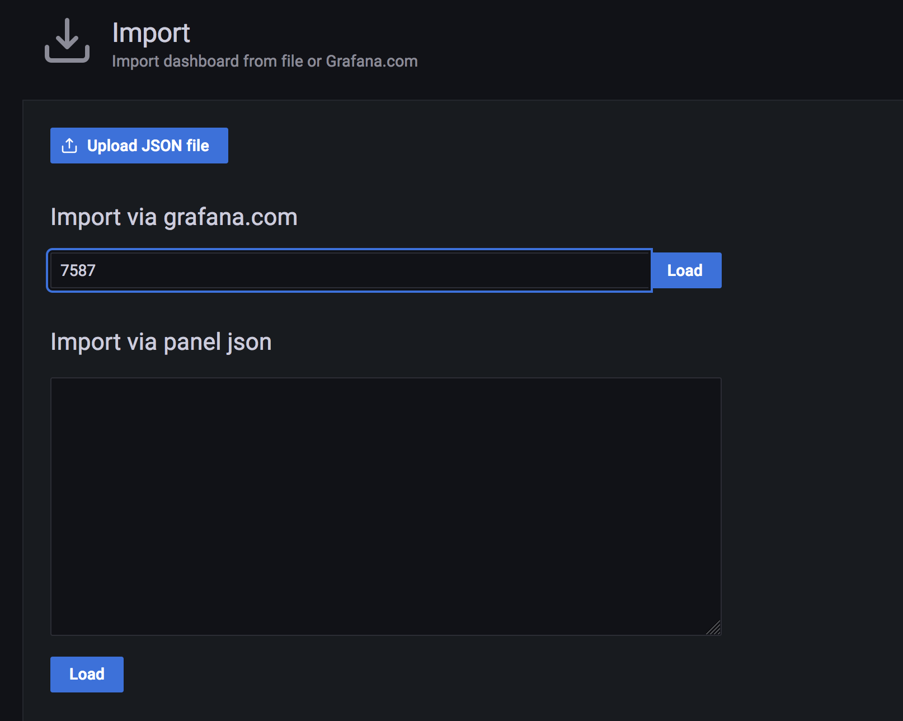

In this article, we are going to see how to monitor your web services or URLs for their SSL expiry and uptime.
You can consider this as your SSL certificate expiry monitor and web service uptime monitor or URL Health check monitor for all your web services (URLs)
These are the set of tools we are going to need
- Prometheus
- Prometheus Blackbox ( exporter for URL monitoring )
- alert manager ( for creating alerts )
- Grafana ( for visualization )
- Slack (for alerts and notifications )
We can go ahead and install all these tools on our chosen server. I am taking Centos7 but you can choose any Linux or windows as per your choice.
It is a lengthy article but do not be frightened. the result is going to be a milestone and solve some real problems.
this is what your end goal is going to look like. ( for some motivation )

And this is how your SSL certificate expiry alert is going to look like in SLACK
This is how your URL uptime monitor alert is going to look like
I can sense that you are already excited. Let’s go ahead and get this setup done with no further ado.
Download links
Prometheus Installation
once you have downloaded the binaries for your distribution, you just need to extract/untar to install.
I have used /opt/prometheus as my base directory to install Prometheus.
[[email protected] /opt/prometheus ]$ ls -lrt total 161676 -rwxr-xr-x 1 3434 3434 87729971 Oct 15 2020 prometheus -rwxr-xr-x 1 3434 3434 77801407 Oct 15 2020 promtool -rw-r--r-- 1 3434 3434 926 Oct 15 2020 prometheus.yml drwxr-xr-x 2 3434 3434 173 Oct 15 2020 consoles drwxr-xr-x 2 3434 3434 38 Oct 15 2020 console_libraries -rw-r--r-- 1 3434 3434 3420 Oct 15 2020 NOTICE -rw-r--r-- 1 3434 3434 11357 Oct 15 2020 LICENSE drwxr-xr-x 4 root root 70 Nov 5 2020 data
you will see a list of files like shown above.
the primary configuration file is Prometheus.yml which we need to update later.
Alert Manager installation
Like Prometheus, an alert manager is also distributed as a tar.gz file. you can extract it into any directory
in my case it is /opt/alertmanager
[[email protected] /opt/alertmanager]# ls -lrt total 47788 -rwxr-xr-x 1 3434 3434 27074026 Jun 2 07:51 alertmanager -rwxr-xr-x 1 3434 3434 21839682 Jun 2 07:52 amtool -rw-r--r-- 1 3434 3434 457 Jun 2 07:56 NOTICE -rw-r--r-- 1 3434 3434 11357 Jun 2 07:56 LICENSE -rw-r--r-- 1 3434 3434 348 Jun 2 07:56 alertmanager.yml
you will see a set of files and alertmanager.yml is the primary configuration file which we will update later.
Blackbox Exporter Installation
Just like the other two previous installations, we need to extract the binaries of BlackBox into a directory
in my case it is /opt/blackbox
upon extracting you will see a list of files like this
[[email protected] /opt/blackbox]# ls -lrt total 17812 -rwxr-xr-x 1 3434 3434 18217362 May 10 12:57 blackbox_exporter -rw-r--r-- 1 3434 3434 94 May 10 13:04 NOTICE -rw-r--r-- 1 3434 3434 11357 May 10 13:04 LICENSE -rw-r--r-- 1 3434 3434 672 May 10 13:04 blackbox.yml [[email protected] blackbox]#
in this blackbox.yml is the primary configuration file
Change the ownership
After extracting/installing, you can see the ownership of these files is set to some numeric user.
You have to change the ownership of these installation directories to your desired user.
you can either create individual accounts for products like prometheus , blackbox etc.
but I don’t see any issues in running these products as a root so am changing the ownership of all these directories and their contents to root
chown -R root:root /opt/prometheus chown -R root:root /opt/blackbox chown -R root:root /opt/alertmanager
Create Services for the tools
Now, as we have installed the three tools promethues, blackbox exporter, alert manager we can go ahead and start them.
the proper way to start these tools is with a service and it can be set up by creating a .service file under /etc/systemd/system
you have to create three files
touch prometheus.service touch alertmanager.service touch blackbox.service
once the files are created, you can open the files with vi or nano and update the contents
I have used root as a service user. if you have individual accounts created for these services you can update the User variable on the file before copying
Prometheus.service file
[Unit] Description=Promethues After=network.target [Service] Type=simple ExecStart=/opt/prometheus/prometheus --config.file=/opt/prometheus/prometheus.yml TimeoutStartSec=0 User=root
alertmanager.service file
[Unit] Description=AlertManager After=network.target [Service] Type=simple ExecStart=/opt/alertmanager/alertmanager --config.file=/opt/alertmanager/alertmanager.yml TimeoutStartSec=0 User=root
BlackBox.service file
[Unit] Description=Blackbox After=network.target [Service] Type=simple ExecStart=/opt/blackbox/blackbox_exporter --config.file=/opt/blackbox/blackbox.yml TimeoutStartSec=0 User=root
Enable Services at boot
As you have created the service you can enable them to start at boot. as a startup script.
You can do this simply by enabling them using systemctl
systemctl enable prometheus.service systemctl enable blackbox.service systemctl enable alertmanager.service
Starting Prometheus, Alertmanager, blackbox
Now you can go ahead and start the service with the default configuration and validate if they can start properly.
sudo service prometheus start sudo service alertmanager start sudo service blackbox start
you can use ps -eaf or service status commands to validate if the services are running fine
Validate Prometheus UI
Now validate, if the Prometheus UI is up and running on port 9090
you can use curl
curl http://localhost:9090/graph
or you can reach from the external world if your security group and firewall allows it
for centos users, you need to additionally enable the port on firewall-cmd
# to add a new port to public zone $ sudo firewall-cmd --zone=public --permanent --add-port=9090/tcp # to reload the configuration for the changes to take effect $ sudo firewall-cmd --reload # to validate if the port is added $ sudo firewall-cmd --list-all
the UI looks like this without any graphs

Configuring Prometheus
At this stage, we have installed all the necessary tools and validated the UI.
Now let’s configure Prometheus to work with the alert manager and BlackBox exporter.
Prometheus is well known for its pull strategy and it pulls the metrics from various exporters and it has proven to be scalable and efficient in certain cases.
If you are having questions about why the pull approach is being used by Prometheus read this article
Our first objective is to make Prometheus pull metrics from blackbox exporter
Creating BlackBox job in Prometheus
Go to the installation directory of our Prometheus in my case it is /opt/prometheus and edit the prometheus.yml file
under scrape_configs add a new job named blackbox with the following snippet
- job_name: 'blackbox'
metrics_path: /probe
params:
module: [http_2xx] # Look for a HTTP 200 response.
static_configs:
- targets:
- https://rumen.free.bg
- https://www.google.com
- https://middlewareinventory.com
- https://devopsjunction.com
relabel_configs:
- source_labels: [__address__]
target_label: __param_target
- source_labels: [__param_target]
target_label: instance
- target_label: __address__
replacement: 127.0.0.1:9115
you can change the URLs of your choice. but the relabel_configs should remain the same.
Validate the configuration before Applying – promtool
As we have made changes in prometheus.yml file. It is always recommended to validate it before and restarting or reloading Prometheus
Prometheus comes with a tool named promtool which is available on the same directory where you have installed Prometheus
in my case it is /opt/prometheus
you can run the promtool check config command to validate the file.
[[email protected] ]$ /opt/prometheus/promtool check config /opt/prometheus/prometheus.yml Checking /opt/prometheus/prometheus.yml SUCCESS: 0 rule files found
In case of no errors found. you will see SUCCESS a message like above.
Configuring Blackbox exporter
the default BlackBox is designed to support ipv6 which could create issues when we are using non ipv6 targets or system
So it is recommended to go with ipv4 for now.
In this step, we are going to update the default blackbox.yml configuration with ipv4 preference
we are going to add these two lines in the http probe
http:
preferred_ip_protocol: ip4
Here is the full configuration file for your reference. you can copy this and paste it to your blackbox.yml file.
modules:
http_2xx:
prober: http
http:
preferred_ip_protocol: ip4
http_post_2xx:
prober: http
http:
method: POST
tcp_connect:
prober: tcp
pop3s_banner:
prober: tcp
tcp:
query_response:
- expect: "^+OK"
tls: true
tls_config:
insecure_skip_verify: false
ssh_banner:
prober: tcp
tcp:
query_response:
- expect: "^SSH-2.0-"
- send: "SSH-2.0-blackbox-ssh-check"
irc_banner:
prober: tcp
tcp:
query_response:
- send: "NICK prober"
- send: "USER prober prober prober :prober"
- expect: "PING :([^ ]+)"
send: "PONG ${1}"
- expect: "^:[^ ]+ 001"
icmp:
Restart Blackbox and Prometheus and Validate
Now it is time to restart our blackbox and prometheus as we have made changes to the configuration files of both.
sudo service prometheus restart sudo service blackbox restart
Before we try to access the BlackBox and Prometheus UI interface.
we can validate if the ports are listening for both services.
# with ss command [[email protected] blackbox]$ ss -tunlp|egrep '9115|9090' tcp LISTEN 0 128 [::]:9115 [::]:* users:(("blackbox_export",pid=4548,fd=3)) tcp LISTEN 0 128 [::]:9090 [::]:* users:(("prometheus",pid=3302,fd=10)) # with netstat [[email protected] blackbox]$ netstat -tunlp|egrep '9115|9090' tcp6 0 0 :::9115 :::* LISTEN 4548/blackbox_expor tcp6 0 0 :::9090 :::* LISTEN 3302/prometheus
as you can see we are validating if the ports 9115 (blackbox_exporter) and 9090 (Prometheus) are listening.
For some reason, if the black box exporter not able to reach the target. the result would be marked as Failure
you can use the corresponding Logs to investigate the Failure.
Now let us validate Prometheus and see if these targets are showing up, by going to http://server_name:9090/targets

you can see our URLs in target and as an instance
the State will be marked as down in case of failure to reach the target.
Creating Graphs in Prometheus based on metrics of our URLs
In Prometheus UI, click on graph menu and choose any of the probes on the query block. for example probe_http_duration_seconds and click on Execute
you will see some graph given below.

you can try different probes and try to create graphs of your interest.
Now we are successfully monitoring our web services (URLs)
Configuring Alerts and Rules in Prometheus
As part of Alert triggering, we are going to setup alerts for two scenarios
- SSLCertExpiringSoon ( with in 4 days )
- TargetUrlDown (Endpoint down or returning invalid response)
To generate alerts we need to create rules in Prometheus first.
If the rules are satisfied Prometheus would send the alert to AlertManager which can further be sent as email or slack notifications
Perform the following steps to create a new rule
Create a new Rule file
Go to Prometheus installation directory i.e /opt/prometheus and create a new directory named rules
under rules directory. create a new file named blackbox-rules.yml
copy the following content and paste it.
groups:
- name: Blackbox rules
rules:
- alert: SSLCertExpiringSoon
expr: probe_ssl_earliest_cert_expiry - time() < 86400 * 4
for: 1m
labels:
severity: warning
annotations:
description: "TLS certificate will expire in {{ $value | humanizeDuration }} (instance {{ $labels.instance }})"
- alert: EndpointDown
expr: probe_success == 0
for: 10m
labels:
severity: "critical"
annotations:
summary: "Endpoint {{ $labels.instance }} down"
As you can see in the preceding snippet, we are having two alerts defined SSLCertExpiry and EndPoint down.
both of these alerts takes black box probes as the source data
SSLCert Expiry alert is using probe_ssl_earliest_cert_expiry and Endpoint down uses probe_success
for the SSL Cert Expiry: If the earliest cert expiry value is below 86400 * 4 4 days it would trigger an alert.
If you want to increase the number of days. you can change 4 to the number of days of your choice.
Here, 86400 represents the seconds in a day 24 hours = 86400 seconds
Now let us map this rule into Prometheus configuration
Adding a rule into prometheus.yml
the rule file can now be added into our prometheus.yml configuration file
under the rule_files add our recently created rule filename rules/blackbox-rules.yml
rule_files: - "rules/blackbox-rules.yml"
Enabling the alert manager in prometheus.yml
While you are adding new rules. you have to also enable the alertmanager configuration which is disabled by default
It should point to the localhost:9093
# Alertmanager configuration
alerting:
alertmanagers:
- static_configs:
- targets:
- localhost:9093
The Final prometheus.yml file with alert manager and rules
# my global config
global:
scrape_interval: 120s # Set the scrape interval to every 15 seconds. Default is every 1 minute.
evaluation_interval: 120s # Evaluate rules every 15 seconds. The default is every 1 minute.
# scrape_timeout is set to the global default (10s).
# Alertmanager configuration
alerting:
alertmanagers:
- static_configs:
- targets:
- localhost:9093
# Load rules once and periodically evaluate them according to the global 'evaluation_interval'.
rule_files:
- "rules/blackbox-rules.yml"
# A scrape configuration containing exactly one endpoint to scrape:
# Here it's Prometheus itself.
scrape_configs:
# The job name is added as a label `job=<job_name>` to any timeseries scraped from this config.
- job_name: 'prometheus'
# metrics_path defaults to '/metrics'
# scheme defaults to 'http'.
static_configs:
- targets: ['localhost:9090']
- job_name: 'blackbox'
metrics_path: /probe
params:
module: [http_2xx] # Look for a HTTP 200 response.
static_configs:
- targets:
- https://rumen.free.bg
- https://www.google.com
- https://middlewareinventory.com
- https://devopsjunction.com
relabel_configs:
- source_labels: [__address__]
target_label: __param_target
- source_labels: [__param_target]
target_label: instance
- target_label: __address__
replacement: 127.0.0.1:9115
Validate the rule file and prometheus.yml with promtool
Now after making the changes, you can re-launch the promtool to validate
You should see SUCCESS and the number of rules displayed as shown below
[email protected] ]# /opt/prometheus/promtool check config /opt/prometheus/prometheus.yml Checking /opt/prometheus/prometheus.yml SUCCESS: 1 rule files found Checking /opt/prometheus/rules/blackbox-rules.yml SUCCESS: 2 rules found
Configuring Alertmanager – Adding Slack route
Now go to the alertmanager installation location and update the alertmanager.yml file with the following content.
Make sure you update the slack_api_url and the channel name according to your requirement.
global:
resolve_timeout: 1m
slack_api_url: https://hooks.slack.com/services/THISISSAMPLE/URI
route:
receiver: 'slack-notifications'
receivers:
- name: 'slack-notifications'
slack_configs:
- channel: '#devops'
send_resolved: true
icon_url: https://avatars3.githubusercontent.com/u/3380462
title: |-
[{{ .Status | toUpper }}{{ if eq .Status "firing" }}:{{ .Alerts.Firing | len }}{{ end }}] {{ .CommonLabels.alertname }} for {{ .CommonLabels.job }}
{{- if gt (len .CommonLabels) (len .GroupLabels) -}}
{{" "}}(
{{- with .CommonLabels.Remove .GroupLabels.Names }}
{{- range $index, $label := .SortedPairs -}}
{{ if $index }}, {{ end }}
{{- $label.Name }}="{{ $label.Value -}}"
{{- end }}
{{- end -}}
)
{{- end }}
text: >-
@here Please check these alerts from Prometheus
{{ range .Alerts -}}
*Alert:* {{ .Annotations.title }}{{ if .Labels.severity }} - `{{ .Labels.severity }}`{{ end }}
*Description:* {{ .Annotations.description }}
*Details:*
{{ range .Labels.SortedPairs }} • *{{ .Name }}:* `{{ .Value }}`
{{ end }}
{{ end }}
to know how to create slack webhooks refer to this article
Now you can restart the alert manager service
validate if all the ports are open and the services are listening using ss
[[email protected] rules]# ss -tunlp|egrep '9115|9090|9093' tcp LISTEN 0 128 [::]:9115 [::]:* users:(("blackbox_export",pid=7841,fd=3)) tcp LISTEN 0 128 [::]:9090 [::]:* users:(("prometheus",pid=8507,fd=9)) tcp LISTEN 0 128 [::]:9093 [::]:* users:(("alertmanager",pid=13439,fd=8))
To Generate some Dummy alerts and to check if the alertmanager is working and slack notifications are triggering.
I have updated the blackbox-rules.yml file with 300 days instead of 4 days
- alert: SSLCertExpiringSoon
expr: probe_ssl_earliest_cert_expiry - time() < 86400 * 300
Validate the Rules in Prometheus UI
Go to http://serverip:9090/rules to validate the rules

Validate the Alerts in Prometheus UI
Go to http://serverip:9090/alerts to see the alerts triggering

Validate your Slack Channel for notification
If you have done everything right, you should see a message in your configured slack channel.
as per my alertmanager.yml configuration it is devops channel
you can customize the message or the icons as per your need.
so we have met our objective of setting up a URL uptime and SSL expiry monitor.
There is one more missing piece which is visualizing our victory. with Grafana.
Installing Grafana
you can download Grafana from here and install on the same system where our other three products are running
Or simply you can type yum install grafana that would take care installing Grafana
start grafana-serverby issuing the following commands
sudo systemctl daemon-reload sudo systemctl start grafana-server sudo systemctl status grafana-server
the status command would show you the status the location of the configuration ini file
[[email protected] system]# systemctl status grafana-server ● grafana-server.service - Grafana instance Loaded: loaded (/usr/lib/systemd/system/grafana-server.service; enabled; vendor preset: disabled) Active: active (running) since Sat 2021-06-26 12:28:06 UTC; 2min 33s ago Docs: http://docs.grafana.org Main PID: 28798 (grafana-server) CGroup: /system.slice/grafana-server.service └─28798 /usr/sbin/grafana-server --config=/etc/grafana/grafana.ini --pidfile=/var/run/grafana/grafana-server.pid --pa... Jun 26 12:28:06 ip-172-45-68-92 grafana-server[28798]: t=2021-06-26T12:28:06+0000 lvl=info msg="Executing migration" logger...kind" Jun 26 12:28:06 ip-172-45-68-92 grafana-server[28798]: t=2021-06-26T12:28:06+0000 lvl=info msg="Executing migration" logger...e v1" Jun 26 12:28:06 ip-172-45-68-92 grafana-server[28798]: t=2021-06-26T12:28:06+0000 lvl=info msg="Executing migration" logger...n_id" Jun 26 12:28:06 ip-172-45-68-92 grafana-server[28798]: t=2021-06-26T12:28:06+0000 lvl=info msg="migrations completed" logge...457ms
enable grafana-server as a service to start at boot by issuing the following command
sudo systemctl enable grafana-server
Now try to reach grafana UI and Login
- Open your web browser and go to http://localhost:3000/. The default HTTP port that Grafana listens to is
3000unless you have configured a different port. - On the login page, enter
adminfor username and password. - Click Log in. If login is successful, then you will see a prompt to change the password.
- Click OK on the prompt, then change your password.
Once logged in let us create a new dashboard.
- Go to dashboards by clicking on the
Dashboardsoption on the left navigation menu - Click on
Manage - Click on
Import - Enter the number
7587on the text box under import via grafana.com and click on Load
- Choose the default
prometheusas the data source. since both Grafana and Prometheus runs on the same system you don’t have to add Prometheus data source explicitly.
Conclusion
Hope you were able to follow and install all the necessary tools such as prometheus alertmanager , blackbox and grafana and get your alerting and slack integration setup.
I am sure this would help you solve some major issues in your infrastructure.

Cheers
Rumen Lishkov
Follow us onFacebook orTwitter For more practical videos and tutorials. Subscribe to our channel Find me on Linkedin My Profile For any Consultation or to hire us [email protected] If you like this article. Show your Support! Buy me a Coffee.
Signup for Exclusive "Subscriber-only" Content

{kind=link}
{kind=link}
{kind=link}